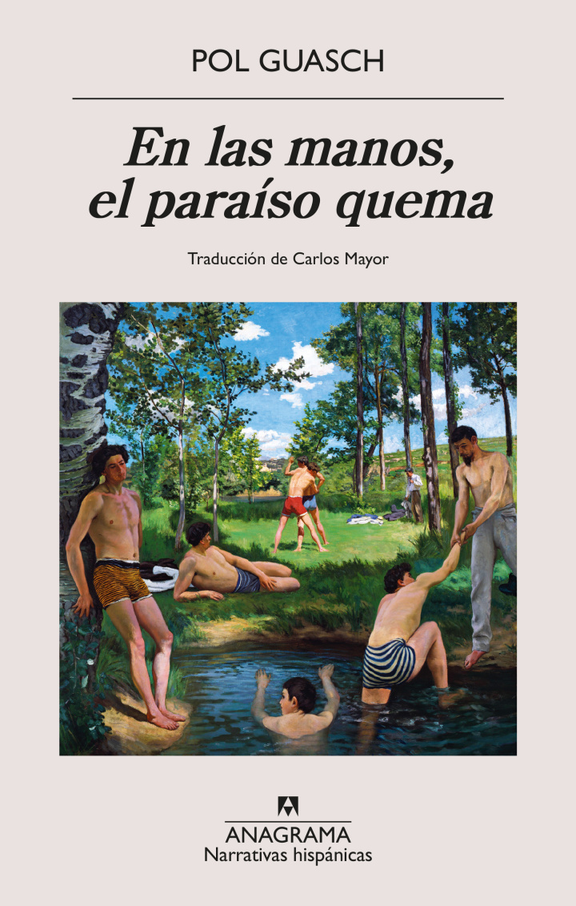

Rita vive en la Colonia, en lo alto de una montaña donde hombres cansados vacían una mina que se agota, y ve cómo los bosques del valle empiezan a arder. Líton, que creció en la ciudad, apaga incendios con los chicos del Servicio. La novela sigue su amistad de la infancia a la veintena, el deseo, sus amores con Fèlix y René, en un mundo marcado por la extinción (¿cómo sonará el zumbido de una abeja?) donde la amistad se vuelve una conjura para imaginar un lugar habitable.
⭐ Goodreads: 3,70/5 la edición española (1.035 valoraciones) · 3,93/5 la catalana (2.004)
«Un libro maravilloso que lleva la esperanza de la amistad al fin del mundo» — Alana S. Portero
«Electrizante… una voz singular, dulce y eruptiva a la vez» — Le Monde · Zenda la llama «absolutamente original» y Contrapunto destaca su crítica ecologista y laboral.
👎 Clarín critica los cambios arbitrarios de narrador y tiempo verbal: «no terminan de producir una novela».
Novedad: acaba de salir en inglés (Paradise Burns, FSG, 20 oct 2026).
Distopía de colapso climático con trasfondo de explotación minera y trabajo precario, contada desde personajes queer: toca tu interés por futuros alternativos y voces diversas. Ojo: es más literaria y poética que «de ideas»; no esperes worldbuilding ni explicaciones. Con 168 páginas, es un buen respiro corto entre Butler y Butler.